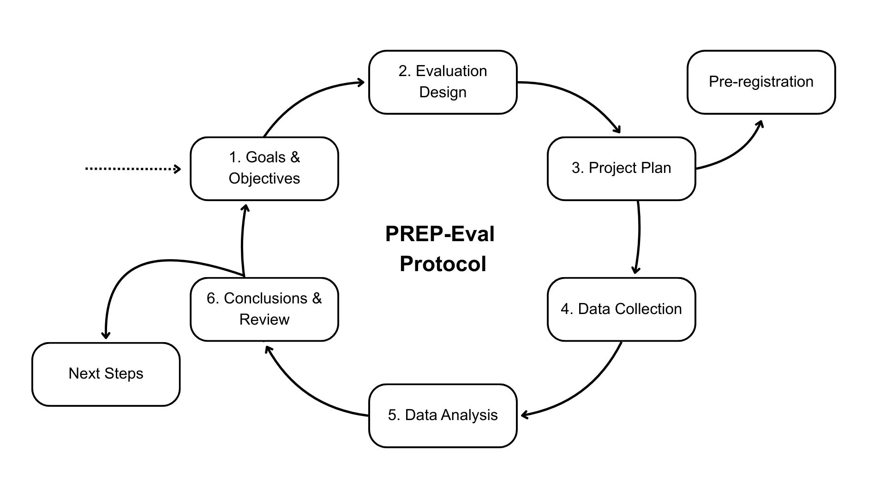

Evaluation is an integral part of the development cycle of any AI system. Despite the growing focus on them, there is no established protocol or methodology for conducting AI evaluations. Here we aim to address this gap by presenting the “Pre-registration and REporting Protocol for AI Evaluations” (PREP-Eval), a step-by-step guide for planning and conducting AI evaluations that complements existing transparency tools such as model cards and evaluation factsheets. We draw on insights from analogous practices in fields such as software testing, data mining, and psychology, and incorporate a pre-registration requirement that facilitates the documentation and justification of deviations from the original plan, helping to identify questionable research practices such as selective reporting. Our protocol is designed to support a wide range of stakeholders, including third-party evaluators, oversight bodies, and newcomers to the field, but it is particularly valuable for small and medium-sized research or industry teams that are developing new AI tools or integrating existing models into novel applications and may lack established evaluation pipelines.
PREP-Eval lifecycle. Each stage comes with its own substages and documentation. The protocol emphasises the relevance of the first stages (1 to 3), and pre-registration serves several purposes, such as taking these three first stages seriously, before rushing into the other stages and ensuring that the influence of the analysis on an eventual revision of goals is transparent.
Evaluation projects are inefficient, unfocused, ineffective or opaque, lacking standard project-management practices.
Evaluations are focused on capability demonstrations and stylised benchmark tasks, creating blind spots that emerge only under realistic use, or sustained interactions over time.
Evaluations are not trusted. Results could be misinterpreted, providing a misleading picture of system capabilities and limitations.
Lack of coordination and difficulty for scaling up cooperative evaluations, especially in big or changing teams.
Difficulty in sharing the evaluation information with other stakeholders and policymakers, for auditing and regulation..
| Phase 1: Goals and Objectives | |
| 1.1 Determine project purpose | Describe the relevant background to the evaluation project, including the terminology, project goals, and success criteria. |
| 1.2 Determine technical objectives | Identify and justify the targets of the evaluation, e.g., an AI system or a new evaluation method, and describe the success criteria in terms of metrics and uncertainty. |
| 1.3 Situation assessment | Develop an inventory of resources, identify requirements and constraints, anticipate risks and contingencies, and assess current understanding of the evaluation targets. |
| Phase 2: Evaluation Design | |
| 2.1 Identify potential evaluation methods | Review current evaluation methods, assess maturity and adoption, and monitor emerging approaches such as red teaming or human evaluations. |
| 2.2 Selection of evaluation methods | Select an evaluation method and rigorously justify your choice. If no suitable methods exist, design or build new ones. |
| 2.3 Analysis specification | Decide and justify how evaluation data will be analysed and what estimators will be produced, including metrics and error analysis. |
| Phase 3: Project Plan | |
| 3.1. Create a project plan | Draft an initial project plan. This may include the major stages of the evaluation process, a realistic timeline, the resources required, the expected outputs and de- liverables of the project, and any other relevant information gathered during the previous planning phases. Distribute the plan for review and input and consolidate it into a final version. |
| 3.2. Pre-register evaluation | Submit a “pre-registration” of the protocol to a time-stamped repository for potential feedback. This pre-registration, covering up to Phase 3.2, should be complemented later alongside project outputs at the end of phase 6. |
| Phase 4: Data Collection | |
| 4.1. Experimental setup, annotations and pilots | Verify data quality and integrity (e.g., if existing datasets will be used, ensure they are accessible), run experimental samples, determine the annotation setup, develop filters and classifiers, and conduct pilot tests. If issues are identified, adjust the protocol as needed and document all changes. |
| 4.2. Full data collection | Run full experiment and obtain full data from the AI system, verifying that the data collected follows the pre-defined sampling strategy. |
| 4.3. Data preparation | Clean, format and organize evaluation data. Verify data quality. |
| Phase 5: Data Analysis | |
| 5.1. Initial data exploration | Preliminary exploration of evaluation data, including variation across task features. Identify unexpected patterns and adjust the analysis plan. |
| 5.2. Conduct planned analysis | Perform analyses according to analysis plan: aggregate data and calculate summary statistics/metrics, build performance breakdowns, calculate inferential statistics and build prediction models. |
| 5.3. Assess and refine analysis | To ensure the robustness and interpretability of the analyses quantify uncertainty, test the assumptions behind the analytical methods and inspect any unusual results. |
| Phase 6: Conclusions and Review | |
| 6.1. Draw conclusions | Synthesize the analytical findings to derive conclusions about the evaluation tar- get(s), considering the limitations of the process. |
| 6.2. Review evaluation process | Examine what aspects of the process worked effectively and which did not, recom- mend improvements for future evaluations and describe the project legacy. |
| 6.3. Determine next steps | Define how and where to communicate results. Decide on next steps (e.g., additional training, further evaluation, deployment). |
| 6.4. Complete the registration | Write the final report. Document and explain any deviations from the pre-registered plan. Submit the final report to ensure transparency and reproducibility of the evaluation effort. |
To illustrate how the protocol is applied, we implement it across several evaluation scenarios, which are presented in the appendix of the paper:
We plan to associate the protocol with a repository of sample evaluations, building from existing repositories of AI cases and evaluation, for practitioners to take inspiration from. We anticipate that PREP-Eval will continue to evolve in response to feedback from the broader community, and in particular from its users. We expect the protocol to be refined as it is applied to a wider range of use cases and as additional implementation details are specified.